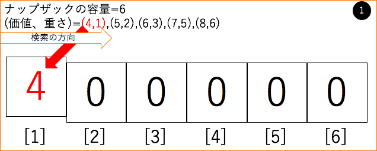

図解-動的計画法とは
ソースコードと解説
#include<stdio.h>
int main(){
int wmax,n; //wmax=ナップザックの容量,n=品物の数
int i,j;
char z; //, を読み取る用の生贄
int count=0;
while(scanf("%d",&wmax)){
if(wmax==0)break;
scanf("%d",&n);
int w,v,dp[wmax+1]; //w=品物の重さ,v=価値
for(i=0;i<wmax+1;i++)dp[i]=0;
for(i=0;i<n;i++){
scanf("%d %c %d",&v,&z,&w);
/* ↓動的計画法*/
for(j=wmax;j>0;j--){ //後ろから計算だよ★(｡･ ω<)ゞ
if(dp[j]!=0){
//今の中身より、新しいのを加えた方がよかった場合
if(j+w<=wmax && v+dp[j]>dp[j+w]){dp[j+w]=(v+dp[j]);}
}
}
if(w<=wmax && v>dp[w])dp[w]=v;//素直に品物ひとつの方がいいとき
}
/* ↑終わり */
int ansi=0;
for(i=1;i<=wmax;i++){ //最大値を求めてる.感じろ
if(dp[i]>dp[ansi])ansi=i;
}
printf("Case %d:\n%d\n%d\n",++count,dp[ansi],ansi);//結果の出力
}
return 0;
}
